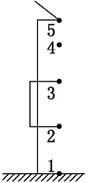
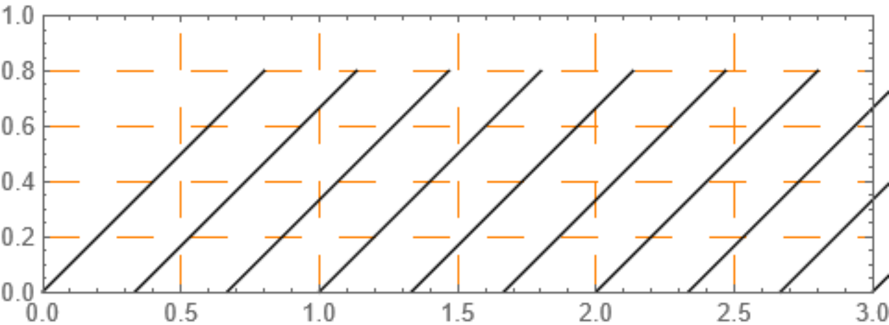

自由落体公式
h=\frac{1}{2}gt^2
v=gt
v^2=2gh
h=\frac{v}{2}t
能力提升
例题1
【例题】屋檐上每隔一定时间滴下一滴水，当第5滴正欲滴下时，第1滴刚好落到地面，而第3滴与第2滴分别位于高1 m的窗子的上、下沿，如图所示。问：(g取10 m/s^2)

⑴此屋檐离地面多高？
⑵滴水的时间间隔是多少？ 设滴水的时间间隔是T，屋檐离地面高度为H。
解法一：基本法 第2个水滴离地高度: h_1=\frac{1}{2}g(3T)^2
第3个水滴离地高度: h_2=\frac{1}{2}g(2T)^2
h_1-h_2=1m 解得 T=0.2s
H=\frac{1}{2}g(4T)^2=3.2m
解法二：比例关系 自由落体是初速度为0的匀加速运动，满足
h_{5-4}:h_{4-3}:h_{3-2}:h_{2-1}=1:3:5:7
h_{3-2}=1m
\rightarrow H=\frac{16}{5}m
解法三：平均速度=中间时刻速度 3-2水滴平均速度
\bar{v}=\frac{1}{T}
v_{2.5T末}=2.5gT
\bar{v}=v_{2.5T末}
解得 T=0.2s
例题2
参观古镇时，恰逢下雨，小吴同学饶有兴致地观察屋檐滴水的情景，他观察到滴水中水滴下落时间间隔均匀，测得1分钟内下落水滴180个，由参观资料知屋檐高为3.2m。不计空气阻力，重力加速度g取，他有以下推断，其中正确的是（ ）
A. 空中相邻的两个水滴的间距保持不变
B. 空中相邻的两个水滴的之间的最大间距是\frac{5}{3}m
C. 空中有3个水滴时相邻间距之比始终为1：3
D. 空中有3个水滴和2个水滴的时间之比是2：3
[详解]A.空中相邻的两个水滴间的时间间隔相同。但是水滴在做加速运动，加速度相同 所以下面的水滴相对上面水滴在匀速下落，间距变大，故A错误
B.1分钟内下落水滴180个，相邻水渊间隔 t_0=\frac{1}{3}s 下落总时间 t=\sqrt{\frac{2h}{g}}=0.8\mathrm{s} 空中相邻的两个水滴的之间的最大间距是 \Delta h=\frac{1}{2}\:gt^{2}-\frac{1}{2}g(t-t_{0})^{2}=\frac{19}{9}\mathrm{m} 故B错误
C.只有初速度为零匀加速时，才有相邻间距之比为 1: 3,故不是始终存在，故 C 错误
D.下落总时间是 0.8s, 时间间隔为\frac13s,空中有 3个水滴和2个水滴的时间之比是 \frac{0.8-\frac{1}{3}\times2}{\frac{1}{3}\times3-0.8}=2:3 故D正确。
故选 D.
新的思路
看下图分析，某时刻与t=1.0s,t=1.0这条竖线与3条斜线有3个交点，此时空中有3个水滴。若有2个交点则代表空中有2个水滴。
水滴从释放到落地时间:t=\sqrt{\frac{2h}{g}}=0.8s,
相邻两个水滴时间间隔 \frac{1}{3} s,
随便取一段t=1.0 s 至 t=1+\frac{1}{3} s 观察:
1.0s 至 \frac{1}{3}+0.8 s=\frac{2}{15}s有3滴水滴;
则2滴水滴时间为:(\frac{1}{3}-\frac{2}{15})s=\frac{3}{15}s
